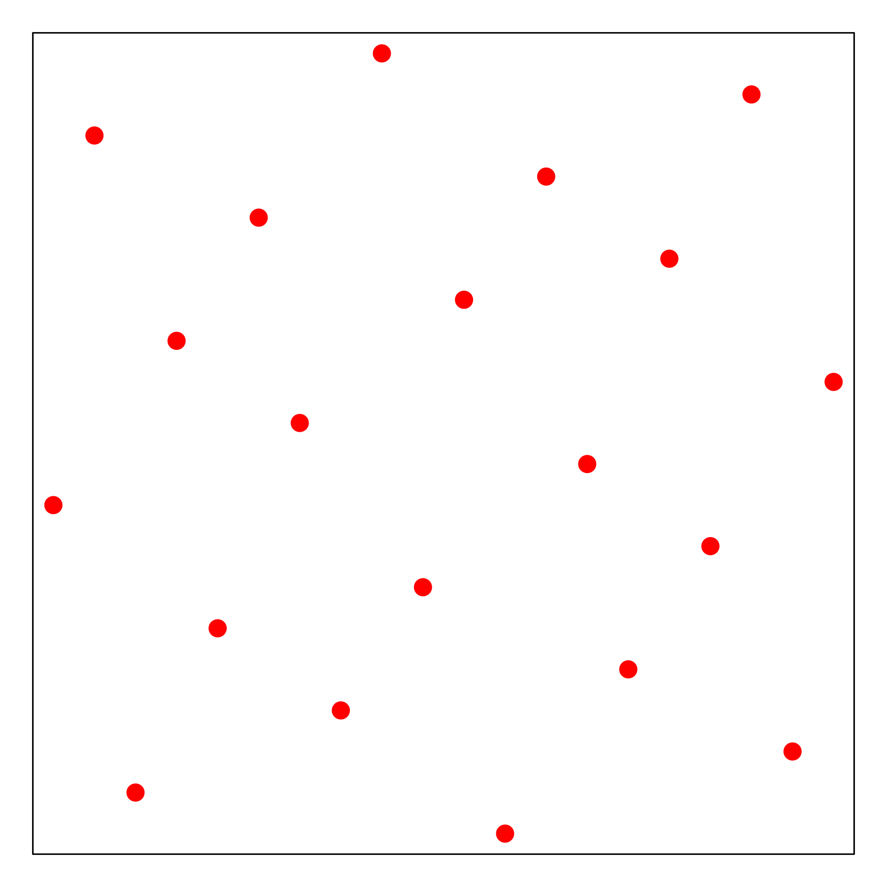

Sequential Uniform Design¶
Introduction¶
We advocate to reformulate AutoML as a kind of Computer Experiment for the purpose of maximizing ML prediction accuracy ([Yang2019]). Within CompExp framework, we propose a novel SeqUD approach for algorithm selection and optimal hyperparameter configuration. Uniform designs is a frequently used spacefilling design method, first proposed in the 1980s by Prof. Fang and Prof. Yuan. It aims at covering the search space uniformly, as shown in the figure below.
{kind=link}
However, it is still an one-shot design method, which has similar limitations as grid search and random search. Therefore, we develop a sequential uniform design method, which enjoys the advantage of batch design and sequential strategy.
Algorithm
Define the search space by converting individual hyperparameters (upon necessary transformation) into unit hypercube \([0,1]^d\): linear mapping if continuous/integer-valued, one-hot encoding if categorical.
Start with \(\theta \in \mbox{UD}\) to train ML algorithm; obtain CV scores; find \(\hat\theta_0^*\) from \(\mbox{UD}\)
Sequential refining strategy: for iterative step \(t=1,2,\ldots,T_{\max}\)
Centered at \(\hat\theta^*_{t-1}\), define the search subspace with reduced range and increased granularity;
Find augmented UD in the subspace; train ML algorithm with new \(\theta\) samples and obtain CV scores;
Collect all trained \(\{\theta, \mbox{CV}(\theta)\}\), and find \(\hat\theta_t^{*}\).
Output the optimal \(\theta^*\) from all trained \(\{\theta, \mbox{CV}(\theta)\}\).
A Simple Demo
The figure below shows a two-stage example of the SeqUDHO approach in a 2-D space. The circle points represent the initial uniform design via \(U_{20}(20^{2})\). The surrounding box serves as the subspace of interest centered on the optimal trial \(x^{*}_{1}\) at the first stage, which is denoted by a square point in green. At the second stage, new trial points are augmented to form a \(U_{20}(20^{2})\), denoted by the blue triangle points.

The proposed approach is advantageous over the Bayesian optimization methods.
Uniformly distributed trials can have a better exploration;
It is free from the meta-modeling and acquisition optimization;
At each stage, the algorithm could be conducted in parallel.
Code Examples¶
Uniform Design:
import numpy as np
from sklearn import svm
from sklearn import datasets
from sklearn.model_selection import KFold
from seqmml import UDSearch
iris = datasets.load_iris()
ParaSpace = {'C':{'Type': 'continuous', 'Range': [-6, 16], 'Wrapper': np.exp2},
'gamma': {'Type': 'continuous', 'Range': [-16, 6], 'Wrapper': np.exp2}}
estimator = svm.SVC()
cv = KFold(n_splits=5, random_state=1, shuffle=True)
clf = UDSearch(ParaSpace, level_number = 20, max_runs = 100, max_search_iter = 30, n_jobs = 10,
estimator = estimator, cv = cv, refit = True, verbose = True)
clf.fit(iris.data, iris.target)
clf.plot_scores()
SVM for Classification:
import numpy as np
from sklearn import svm
from sklearn import datasets
from matplotlib import pylab as plt
from sklearn.model_selection import KFold
from sklearn.preprocessing import MinMaxScaler
from sklearn.model_selection import cross_val_score
from sklearn.metrics import make_scorer, accuracy_score
from seqmml import SeqUD
sx = MinMaxScaler()
dt = datasets.load_breast_cancer()
x = sx.fit_transform(dt.data)
y = dt.target
ParaSpace = {'C': {'Type': 'continuous', 'Range': [-6, 16], 'Wrapper': np.exp2},
'gamma': {'Type': 'continuous', 'Range': [-16, 6], 'Wrapper': np.exp2}}
estimator = svm.SVC()
score_metric = make_scorer(accuracy_score, True)
cv = KFold(n_splits=5, random_state=0, shuffle=True)
clf = SeqUD(ParaSpace, level_number = 20, max_runs = 100, max_search_iter = 30, n_jobs = 10,
estimator = estimator, cv = cv, refit = True, verbose = True)
clf.fit(x, y)
clf.plot_scores()
Xgboost for Regression:
import numpy as np
import xgboost as xgb
from sklearn import datasets
from sklearn.model_selection import KFold
from sklearn.preprocessing import MinMaxScaler
from sklearn.metrics import make_scorer, mean_squared_error
from seqmml import SeqUD
dt = datasets.load_diabetes()
sx = MinMaxScaler()
sy = MinMaxScaler()
x = sx.fit_transform(dt.data)
y = sy.fit_transform(dt.target.reshape([-1,1]))
ParaSpace = {'booster': {'Type': 'categorical', 'Mapping': ['gbtree', 'gblinear']},
'max_depth': {'Type': 'integer', 'Mapping': np.linspace(2,10,9)},
'n_estimators': {'Type': 'integer', 'Mapping': np.linspace(100,500,401)},
'min_child_weight': {'Type': 'integer', 'Mapping': np.linspace(1,100,100)},
'subsample': {'Type': 'continuous', 'Range': [0, 1], 'Wrapper': lambda x:x},
'colsample_bytree': {'Type': 'continuous', 'Range': [0, 1], 'Wrapper': lambda x:x},
'learning_rate': {'Type': 'continuous', 'Range': [-5, 0], 'Wrapper': lambda x: 10**x},
'gamma': {'Type': 'continuous', 'Range': [-5, 0], 'Wrapper': lambda x: 10**x},
'reg_lambda': {'Type': 'continuous', 'Range': [-5, 0], 'Wrapper': lambda x: 10**x},
'reg_alpha': {'Type': 'continuous', 'Range': [-5, 0], 'Wrapper': lambda x: 10**x}}
Level_Number = 20
estimator = xgb.XGBRegressor()
score_metric = make_scorer(mean_squared_error, False)
cv = KFold(n_splits=5, random_state=0, shuffle=True)
clf = SeqUD(ParaSpace, level_number = 20, max_runs = 100, max_search_iter = 30, n_jobs = 10,
estimator = estimator, cv = cv, refit = True, verbose = True)
clf.fit(x, y)
clf.plot_scores()
Kmeans for Unsupervised Clustering:
import numpy as np
from sklearn import datasets
from sklearn.cluster import KMeans
from sklearn.model_selection import KFold
from sklearn.preprocessing import MinMaxScaler
from seqmml import SeqUD
sx = MinMaxScaler()
dt = datasets.load_iris()
x = sx.fit_transform(dt.data)
y = dt.target.reshape([-1,1])
ParaSpace = {'n_clusters': {'Type': 'integer', 'Mapping': np.linspace(2,9,8)},
'tol': {'Type': 'continuous', 'Range': [-6, -3], 'Wrapper': lambda x: 10**x}}
Level_Number = 20
estimator = KMeans()
cv = KFold(n_splits=5, random_state=0, shuffle=True)
clf = SeqUD(ParaSpace, level_number = 20, max_runs = 100, max_search_iter = 30, n_jobs = 10,
estimator = estimator, cv = cv, refit = True, verbose = True)
clf.fit(x)
clf.plot_scores()
Reference list
- Yang2019
Zebin Yang, Aijun Zhang and Ji Zhu. (2019) Hyperparameter Optimization via Sequential Uniform Designs. Submitted.